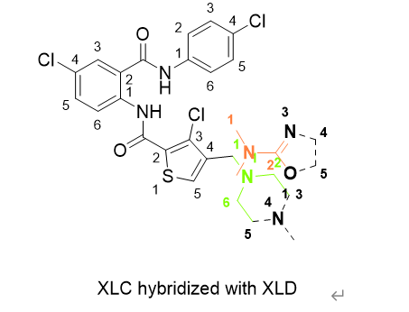

由能微扰（FEP）— A short introduction in drug discovery 物理学或者物理化学中的自由能微扰由来已久，至少在二十世纪五十年代即已存在。吉布斯自由能的变化只与起始状态和最终状态有关，不管变化路径如何，始终态之间的差值是固定的，就像一条河上下游的两座城市，可以有很多条路连接，但不管这些路是水路还是先爬了一座山又下了一个坡的陆路，两座城市之间的海拔差值始终是固定的。
耶鲁大学的Jorgensen教授于二十世纪八十年代首次将自由能这一纯粹的物理化学概念引入一个特殊的应用场景，即蛋白质和小分子的结合。这个应用场景之所以重要，是因为几乎所有的药物（大部分的传统药物）都是小分子，而小分子与人体的作用机理，大部分也涉及到与蛋白质的结合。当评估两个类似的小分子哪个更容易与蛋白结合的时候，人们往往是通过体外实验的方法，比如测量IC50，使用ITC测量焓变等方法。Jorgensen教授的主要贡献在于，该课题组意识到两个小分子之间的这些体外测量数据的差异，可以用它们与蛋白结合的自由能差异来解释。
药物研发是长达数十年，涉及众多学科的综合项目，早期药物发现非常重要的就是评估类似药物小分子对特定蛋白质的结合能力的大小。分子对接已经被广泛应用，其最大的问题是容易给出假阳性的结果，当一个系列的小分子长得都比较类似，只是局部稍有不同的时候，FEP可以显著降低假阳性。
上文已经提到吉布斯自由能只与始/终态有关，理解这一点至关重要。计算机模拟计算的吉布斯自由能虚幻的设想了一个现实中永远不会发生的路径来连接始/终态，设想现在有两个小分子， 这里用两个字母加符号表示，这两个分子有共同的母核A，第一个是Acccc(c表示A母核上带了一个侧链)，第二个是Adddd（d表示另一个侧链）

现在我们已经体外通过各种实验比如IC50测定，已经获得两个分子的相对结合能力强弱。让我们来看，自由能微扰是如何通过一个虚拟的变化路径来处理该问题.
首先需要定义一个参数Lambda,λ, λ 介于0到1之间，它定义了旧侧链消失和新侧链出现的速率。The fist λ :Acccc > Acccd,
Second λ lambda window Acccd > Accdd,
Third λ Accdd > Acdddd,
Forth λ Acddd > Adddd.
通过设定λ参数，比如设dλ=0.25， 就把1分为了四个窗口如上。 如果dλ=0.0625, 计算机就会按照1/0.0625=16个窗口来让c/d 消失/生长。
计算机设想Acccc 首先变成了Acccd, 计算了这两个局部状态之间的自由能差值的d1 接下来，是Acccd 变成 Accdd, 再次计算这两个局部状态之间的差异 d2 以此类推： Accdd > Acddd d3, Acddd > Adddd. d4 显然这个侧链逐渐变化的过程是虚拟的，一般的自由能微扰将这个过程分为16 或者32 次，即需要分别计算16或者32个窗口的局部自由能变化，最后相加就是总的自由能变化。
在现实中，这里主要是指实现这一个Acccc 到Adddd的化学反应现实，第二个分子可以由某种取代反应（或任何其他反应）一步得到第二个分子,而不是需要四步或者十六步。当lambda=0.5 的时候两个分子将以杂合体的形式存在，下图为了展示的更清楚，取代基被故意错位了一点，虚线黑色部分代表消失/未出现的原子。
一旦你引入了假的过程，就会产生其他的不合理的逻辑需要处理。在16 或32个窗口里，产生的最大的问题是，第一个窗口和最后一个窗口， 为了简单阐述这个问题我们来看另外一个例子。 现在假设第一个分子为ccccA，第二个分子为Adddd 变化过程为，第一窗口 ccccA > cccAd 第二窗口 cccAd > ccAdd 第三窗口 ccAdd > cAddd 第四窗口 cAddd > Adddd 需要关注的是第一窗口，因为d 是第一次出现，是从无到有的突破，如果 ccccA 的旁边正好原来就已经存在的水分子w,也就是ccccAw, 现在我们突然又允许一个d 跟它重叠，结果就是cccAdw , d和w 之间的距离几乎为零，导致电荷排斥力和范德华力等，都没有任何意义的大，第一窗口的d1 也就不准了。 d和 w 之间的问题被称为 end point catastrophe, 字面意思终点碰撞灾难。 为了解决这个问题，另一个虚拟的解决办法被引入，也就是在前几个窗口不去计算新出现的原子与环境的电荷势能，而只在后半程计算。
虽然仍然没有大规模普及，但是GPU技术的廉价话正让FEP的门槛迅速降低，比如32块CPU的计算速度为12小时，使用英伟达Tesla-V100-GPU可能只需要一小时，但计算成本可能是接近的。 目前做的最好的自由能微扰提供商是以量子力学科学巨人薛定谔命名的公司——薛定谔，Schrodinger 被认为是下一个特斯拉，比尔盖茨十多年前就已经开始对薛定谔投资。 薛定谔的FEP plus 现在是行业标准，其FEP正在深刻改变药物早期筛选的格局，各大顶级药企都是该公司客户。 免费的FEP可以通过伊利诺伊大学开发的NAMD或者斯德哥尔摩大学开发的Gromacs实现，需要学习代码操作。如果有钱，还是选择薛定谔，薛定谔提供全流程的图形界面操作。
对于有机化学的合成劳工们来说，一个好的FEP也许意味着可以省下几个月摇瓶子的时间。因为以前甚至是此时此刻，有机化学的从业者们仍然不得不一个一个的合成出氟/氯/溴取代的一系列化合物来做生物活性测试，也许以后只测其中一个，剩下的两个就可以通过FEP来评估是否还有合成的必要性，即如果FEP结果为负数可考虑合成，如果为正则可降低合成优先级。如果能避免接触有毒有害的试剂，避免分析那些烧脑的反应机理，就能达到目的，是所有人都乐见的。
下面具体阐述fep大的计算原理，如下所示，第一行路径的前半部分 >1> 和 第二条路径的后半部分 >4> 是真实的，这两个过程代表着分别将两个分子溶于水并与蛋白结合的过程；而第一行的后半部分 >2> 和第二行的前半部分是 >3> 则是假的，这两个过程分别代表了结合了蛋白的配体之间的lambda转化和单纯的配体之间的转化，这在现实中是无法操作的。两个类药分子对靶点蛋白结合自由能差异ΔΔG= 4-1 ， 因为1 是第一个分子的结合自由能，4 是第二个分子的结合自由能，即我们需要计算两个真实的结合自由能过程。
Acccc >1> Acccc + protein >2> Adddd + protein
Acccc >3> Adddd >4> Adddd + protein
但是在实际计算中无论是计算1还是计算4 都是十分困难的，由于体系里突然多出一个蛋白质，即使使用超级计算机也难以使得使得模拟体系平衡. 由于起始点和结束点相同，我们可以得到1+2 = 3+4， 移项，就有4-1= 2-3， 而2 和3 所连接的体系差别很小，因此在fep计算中就只需要分别计算2和3，然后做差即可。
由于这种计算是基于虚拟的转变，因此fep 也被称为“炼金术化学”，即通过原子种类的直接改变实现化学转变（现代化学只能实现原子的排列组合而无法直接改变类型），也通过现实中不会发生的能量过程实现状态转变，就像古代炼制丹药的人一样。
下图进一步解释了这个原理，横向为真实的，但是难于计算的自由能，竖向为虚假但是容易计算的自由能。
现在我们假设四个图中的左上为起始点，右下为结束点，从起始点到结束点沿着箭头方向有两个路径，其自由能变化理论上是绝对一样的，那么很容易就得到 ΔGsolvent+ ΔGxld = ΔGxlc+ΔGcomplex, 现在移项得到： ΔGxld – ΔGxlc = ΔGcomplex-ΔGsolvent, 而这个差值正是我们需要的ΔΔG，同时注意到与横向计算不同，ΔGcomplex-ΔGsolvent 是竖直计算的，由上图，竖直相邻的两个体系差别很小，因此相对容易达到平衡，在实际计算的时候，就容易实现。因此只需分别计算ΔGcomplex和 ΔGsolvent，然后对二者做差，就是ΔΔG。